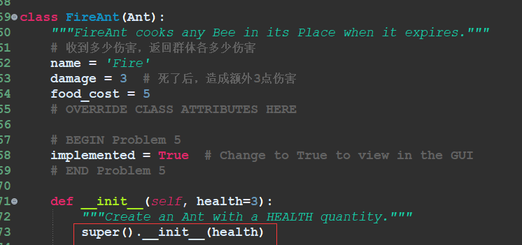

Syntax Start
学了super().method 调用父类方法/网站教程/py.file运行会了解过程，有点像debug，可能这个思路以后还能用来学其他吧……
学了 OrderedDict
/ OrderedDict函数csdn/官方文档 按照有序插入顺序存储 的有序字典。 除此之外还可根据key， val进行排序。大概是这个意思吧……具体也不是很熟，可以popitem和 move_to_end
所以子类要修改父类构造器里的参数-->需要再构造-->super调用父类的构造方法
Syntax End
youtube看到8分20秒，想着是学不动了去后面看看，真的是函数都看不懂啊操
后面下了基本python电子书……感觉可能还是youtube看别人视频有用一点……虽然书也不是没用，可能有project是有用的，但是千万小心，一定要做好现在这个！！！否则很可能cs61a进度完全拖慢，就算是抄·也给我看懂思路